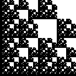

| Recall the Moran equation. For a self-similar fractal made of N copies scaled by r1, r2, ..., rN, the similarity dimension d is the solution of | |||
| r1d + r2d + ... + rNd = 1 | |||
| For example, consider the fractal on the left. | |||
| The decomposition of the right shows this fractal is composed
of three copies scaled by | |||
| 3(1/2)d + 2(1/4)d = 1 | |||
| Noting 1/4 = (1/2)2, we have | |||
| 1 = 3(1/2)d + 2((1/2)2)d = 3(1/2)d + 2((1/2)d)2 | |||
| Writing x = (1/2)d, we see the Moran equation is a quadratic equation | |||
| 2 x2 + 3 x - 1 = 0 | |||
| The solution is x = | |||
| Because x must be positive, we have x = | |||
| (1/2)d = (-3 + Sqrt(17))/4 | |||
| Taking Logs and solving for d, we obtain | |||
| d = Log((-3 + Sqrt(17))/4)/Log(1/2), approximately 1.83251 | |||
| Exact solutions can be obtained in this way if all the scaling factors are powers of the same number. |
Compute the similarity dimensions of these fractals. Click each picture for the solution.
|  | ||||
Return to Multifractals.